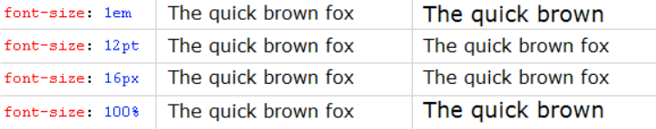
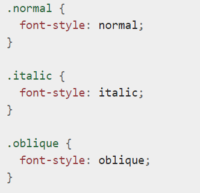
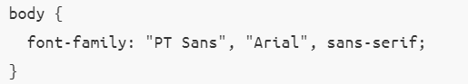
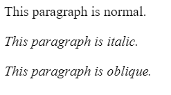

Стили для блоков
- Внутренний отступ
- При помощи свойства padding можно задать внутренний отступ блоку.1-ое значение отступ от верхнего края , потом право , потом низ и в конце
отступ от левого края.Так же если отступ со всех сторон одинаковый , то можно указать только одно значение.
Значения могут быть как абсолютные , так и относительные.

- Внешний отступ
- Задается свойством margin.Порядок указания значений такой же как и у padding.
- Свойство width
- Указывает ширину блочного тега.Ззначения как абсолютные , так и относительные. 
- Свойство height
- Указывает высоту блочного тега.Значения как абсолютные , так и относительные. 
- Свойство overflow
- Отвечает за отображение содержания блочного элемента.Например overflow: visible отвечает за то , что если содержимое блока
будет выходить за его размеры , то оно все равно будет видимым. overflow: hidden скрывает все , что выходит за границы блока
overflow:scroll задает прокрутку содержимого текста - Свойство display
- Определяет как элемент должен отображаться.Сейчас мы говорим только о нескольких свойствах данного свойства , но позже поговорим и о других.
display: block - делает стройчнй блок блочным(соответственно все свойства блочных тегов становятся доступными)
display: none - отключает видимость блока. display: inline - делает блочный блок строчным.
display: inline-block - тег остается строчным , но при этом на него дейстувуют отступы и другие свойства блочных элементов.

